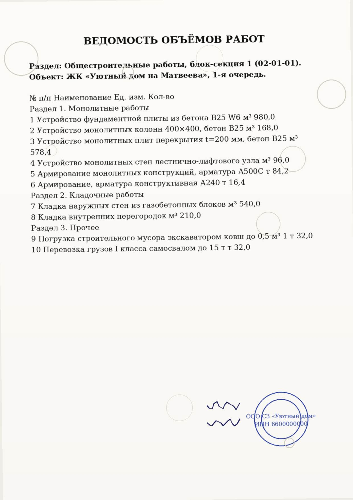

АКТИОНСтроительство· Высшая инженерная школа← Все шаги
ФОТО
Евгений Эрман, к.т.н.
руководитель Лаборатории ИИ-решений девелоперской компании «РАЗУМ»
Автор урока
Курс «30 шагов: рабочий ИИ-инструмент для строителя» · Неделя 3 · Шаг 17 · Роль: инженер ПТО
Шаг 17. PDF и сканы: распознать и извлечь
Папка «сканы актов» на объекте растёт быстрее, чем кто-либо успевает вбить объёмы в таблицу вручную. ИИ распознаёт скан за секунды — но верить цифрам без сверки с оригиналом нельзя: OCR путает похожие символы.
Ассистент · Уровень 2 · библиотека промптов⏱ 15 минут🎓 Уверенный
⚙ Для переноса в платформу Актион
Платформа подставляет роль пользователя автоматически из профиля (П-4 «выбор роли» из требований к разработке) — строка «Роль: …» выше должна обновляться без правки HTML урока.
📄 К уроку приложены: сканы АОСР № 142 и ВОР (JPG/PDF), текст акта для сверки и промпт C1 из вашего промпт-пака ПТО.
1 · Зачем это нужно
Папка «сканы актов» — и надо вытащить объёмы в таблицу
На сервере проекта — папка со сканами актов освидетельствования скрытых работ, ведомостей объёмов, накладных. Каждый месяц кто-то вручную открывает десятки PDF и переносит цифры в Excel: номер акта, дату, объём, массу. Это медленно и это ошибка на переносе — опечатался в одной цифре, и отчёт разошёлся с фактом.
💡 Зачем это вам: ИИ с распознаванием текста (OCR) вытаскивает эти цифры из скана за секунды и сразу кладёт их в таблицу — вам остаётся сверить результат с оригиналом, а не перепечатывать его с нуля.
Что важно помнить
ИИ распознаёт скан с ошибками — качество зависит от чёткости изображения, наклона, печатей поверх текста.
Критичные цифры (объёмы, массы, суммы) — всегда сверяются с оригиналом, а не принимаются на веру.
Один и тот же навык работает и с фото с телефона, и со сканом от планшетного сканера, и с PDF.
2 · Скан-пример
Акт освидетельствования скрытых работ № 142
Сквозной кейс: на объекте ЖК «Уютный дом на Матвеева» подписан акт по армированию плиты перекрытия на отм. +12,000. Вот как выглядит его скан — с таким же документом вы столкнётесь на практике.
Три способа передать документ чат-боту с распознаванием изображений — выбирайте под ситуацию.
📎 Приложить файл
В чате нажмите на скрепку/значок вложения, выберите PDF или JPG со сканом — большинство современных чат-ботов принимают файлы напрямую.
📷 Сфотографировать
Нет скана под рукой — сфотографируйте документ на объекте: ровный свет, без бликов, весь лист в кадре, без сильного наклона.
📱 Мобильный сценарий
Сфотографировали на телефон → сразу открыли приложение чат-бота → приложили то же фото → получили распознанный текст, не заходя за компьютер.
RU-инструменты для этой задачи
GigaChat — принимает изображение прямо в чат, распознаёт текст и таблицы на фото/скане.
Алиса / YandexGPT — аналогично работает с приложенным изображением документа.
Yandex OCR — специализированный сервис распознавания, полезен для больших пачек сканов и таблиц со сложной вёрсткой.
3 · Демо
Распознаём акт и извлекаем объёмы
Промпт — просьба распознать скан и сразу выдать результат в структурированном виде, а не пересказом.
Распознай акт и извлеки в таблицу: № акта, дата, отметка, объём армирования (м²), масса арматуры (т).
Документ: [приложите скан АОСР № 142]
G GigaChat · веб-чат скан приложен
⚙️ Роль: инженер ПТО · вложение: skan-aosr.jpg
Распознай акт и извлеки в таблицу: № акта, дата, отметка, объём армирования (м²), масса арматуры (т).
Распознал приложенный скан. Вот извлечённые данные:
№ акта: 142
Дата: 23.06.2026
Отметка: +12,000
Объём армирования: 482 м²
Масса арматуры: 11,8 т
Документ: Акт освидетельствования скрытых работ, армирование плиты перекрытия, захватка 2-Б, ЖК «Уютный дом на Матвеева».
Ответ смоделирован для урока
🔍 Сверь с оригиналом: прежде чем нести цифры в отчёт, откройте скан ещё раз и сверьте каждое число. OCR регулярно путает похожие символы — например, 8 и В, 0 и О (ноль и русская буква «О»). Один неверный символ в номере акта или объёме — и данные разойдутся с исполнительной документацией.
4 · Ловушки OCR
Что чаще всего портит распознавание
🖋️ Печати и подписи поверх текста
Штамп или подпись, наложенные на цифры, часто «съедают» символ или заменяют его похожим — ИИ распознаёт то, что видит, а не то, что имелось в виду.
📐 Наклон и кривизна фото
Скан или фото под углом искажает форму символов — растёт риск спутать соседние цифры и буквы, особенно в мелком шрифте таблиц.
📊 «Плывущие» таблицы
В сложных таблицах со слитыми ячейками ИИ может сдвинуть значение в соседнюю строку или столбец — итог выглядит правдоподобно, но неверно.
⚠️ Правило: критичные цифры (объёмы, массы, суммы, номера актов) — всегда двойная сверка с оригиналом. Это тот же приём «двойная сверка», который вы применяли на Шаге 2, только теперь источник — скан, а не текстовый файл.
💡 Перекрёстная проверка документов: масса армирования 11,8 т из акта № 142 должна сойтись с позицией спецификации по этому же участку. Если цифры из разных документов кейса расходятся — доверять ни одной нельзя, пока не разобрались, где ошибка: в скане, в OCR или в самом документе.
5 · Второй пример
Ведомость объёмов работ (ВОР) → структурированная таблица
Акт — один документ с несколькими цифрами. ВОР — сложнее: десяток позиций, разные единицы измерения, нужно развести бетон и арматуру по отдельности.

📄 Скан ВОР № 02-01-01 — общестроительные работы, блок-секция 1
🧩 Промпт C1 целиком промпт-пак ПТО
C1 · Извлечение объёмов из акта/ВОР в таблицу
Ты — инженер ПТО. Задача: распознай приложенный акт/ведомость и выведи объёмы в
таблицу: позиция, наименование, ед. изм., количество. Отдельно посчитай итог по
бетону и по арматуре. Формат: таблица + строка «Итого».
Документ: [вставьте / приложите скан]
Это промпт C1 из твоего промпт-пака ПТО — тот же приём применим к любому скану ведомости или акта.
№
Наименование
Ед. изм.
Кол-во
1
Устройство фундаментной плиты, бетон B25 W6
м³
980,0
2
Устройство монолитных колонн 400×400, бетон B25
м³
168,0
3
Устройство монолитных плит перекрытия t=200 мм, бетон B25
м³
578,4
4
Устройство монолитных стен ЛЛУ
м³
96,0
Итого бетон
1 822,4 м³
5
Армирование монолитных конструкций, А500С
т
84,2
6
Армирование, конструктивная А240
т
16,4
Итого арматура
100,6 т
Ответ смоделирован для урока — реальный результат сверяется со сканом построчно, особенно единицы измерения и разряды чисел.
6 · Материалы урока
Материалы урока
Всё содержимое этого шага — текстовые материалы, сканы кейса, промпт и HTML-интерактив — собрано в один архив.
📝Конспект урока (ловушки OCR, правило двойной сверки, .md)
📁Документы кейса «Уютный дом на Матвеева»: 04 (АОСР № 142), 12 (ВОР)
🖼️Сканы JPG/PDF: АОСР № 142 и ВОР — те же изображения, что в уроке
🧩Промпт C1 (извлечение объёмов из акта/ВОР) из промпт-пака ПТО
Для команды переноса: архив содержит всё содержимое шага.
7 · Сделай в живом чате
Сделай в живом чате
Сфотографируйте свой документ (акт, ведомость, накладную — без персональных данных!) или скачайте скан АОСР № 142 / ВОР из материалов урока. Распознайте его в реальном чат-боте по промпту C1 — например, в одном из ниже. Затем вставьте результат в поле под кнопками.
Итоги урока откроются после того, как вы вставите результат и отметите чекбокс.
⚙ Для переноса в платформу Актион
Демо-гейт реализован локальным JS (без сохранения данных). На платформе эта блокировка должна опираться на реальное событие взаимодействия участника с чатом (или просто на заполненное поле + чекбокс, как здесь) — ничего никуда не отправляется и в демо-версии.
🔒 Сначала блок «Сделай в живом чате»
8 · Самопроверка
Перед сдачей отметьте
0 из 4 — пройдитесь по списку
🔒 Сначала блок «Сделай в живом чате»
9 · Практика и проверка
Сделайте на своей задаче
Возьмите реальный (или учебный) скан со своего объекта — акт, накладную, ведомость — и распознайте его по промпту C1. Обезличьте данные: без реальных ФИО, реквизитов и коммерческой тайны — только объёмы и структура документа.
⚙ Для переноса в платформу Актион
Здесь платформа подключает отправку куратору — проверка №3 (см. паспорта шагов). В демо-комплекте вместо реальной отправки — локальное скачивание .txt с текстом задания, ничего никуда не отправляется.
⬆️ Ассистент закрепил навык «распознавание сканов и извлечение данных». Что забрать: скан → таблица за секунды, а не полчаса ручного переноса; критичные цифры — всегда двойная сверка с оригиналом; расхождение между документами кейса — сигнал проверить, а не игнорировать.